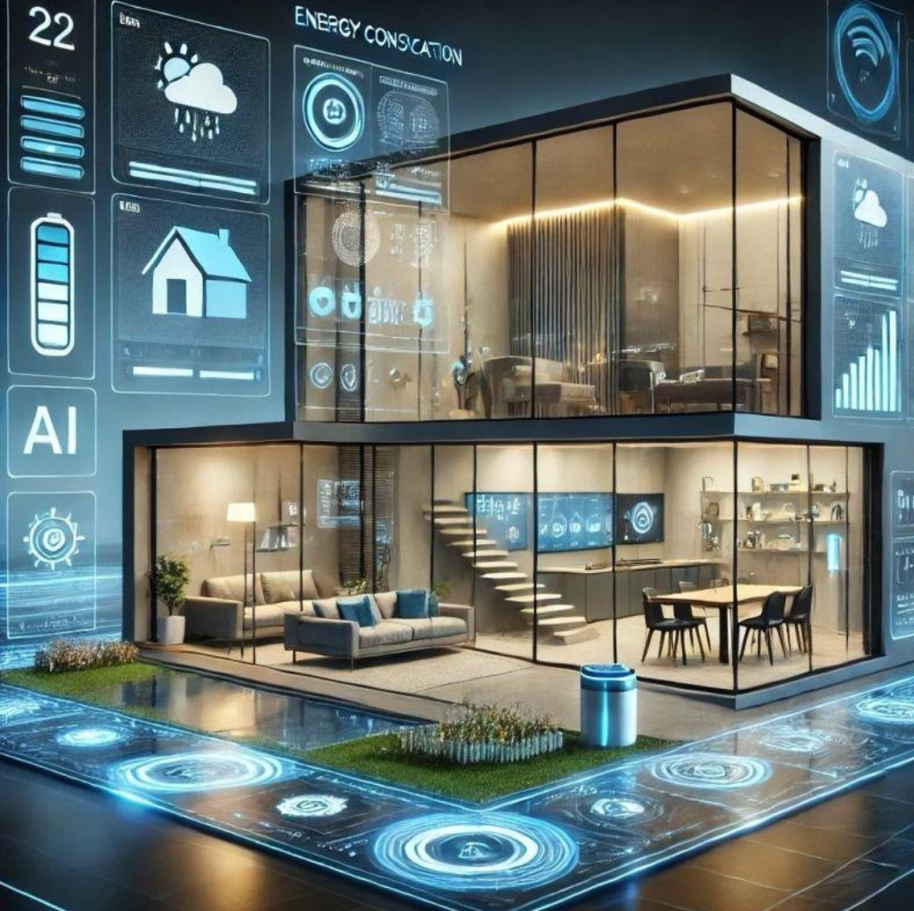
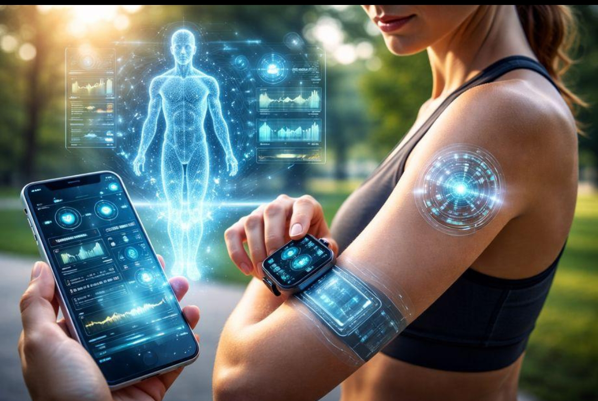
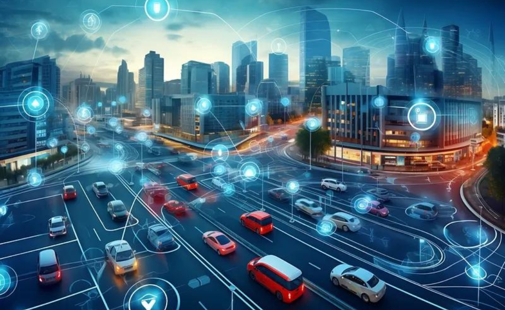
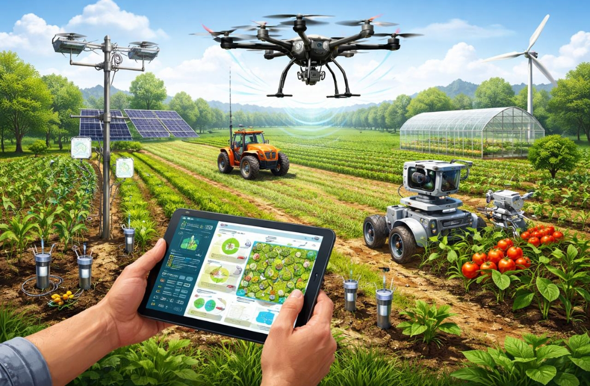
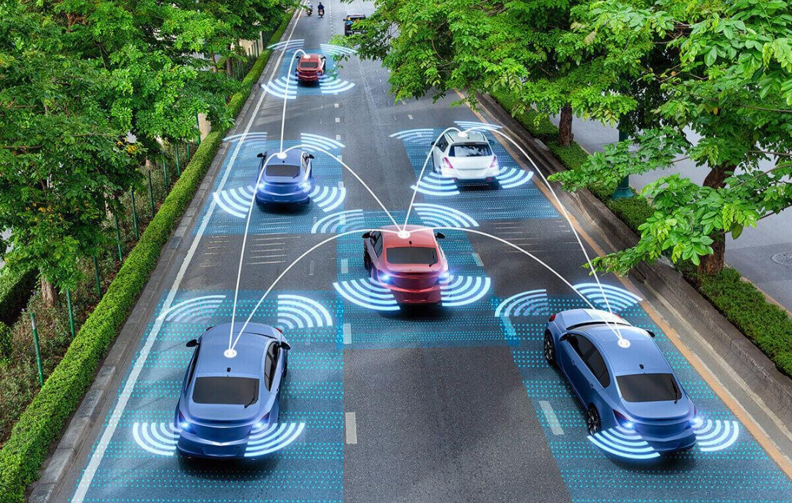
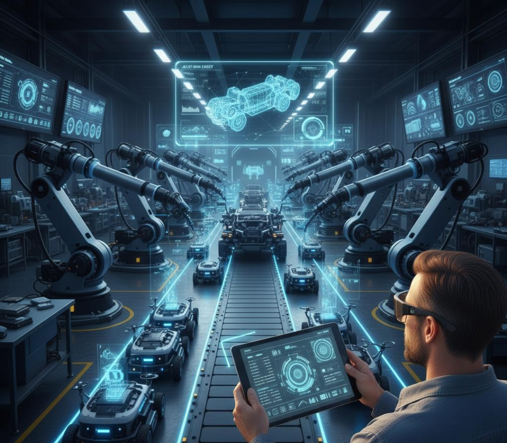

Learn the basic concepts behind how IoT devices work.
Connected devices collect information using sensors.
Example: SmartwatchDevices communicate by sending data through networks.
Example: Wi-FiCollected data is processed to provide useful information.
Example: Step trackingData can be used to perform actions or provide responses.
Example: Sending alertsDiscover what the future holds for IoT.
The future of IoT promises a smarter and more connected world where devices communicate seamlessly, making everyday life easier, more efficient, and more convenient through advanced technology and automation.
Homes that learn residents' routines and automatically manage energy, security, temperature, and appliances with minimal human input.

Connected devices that work with AI to identify potential health problems earlier and help doctors provide more personalized care.

City systems that coordinate traffic, electricity, water, and waste services in real time to improve efficiency and sustainability.

Connected sensors and robots that could monitor crops, detect plant diseases, and manage irrigation with less manual work.

Vehicles and road infrastructure that communicate to coordinate traffic, improve safety, and reduce congestion.

Machines that coordinate production, predict maintenance needs, and adjust operations automatically when problems arise.

Discover how devices communicates
Devices communicate by sending and receiving data through the internet or other networks using Wi-Fi, Bluetooth, or cellular connections. In IoT, devices share information with each other or a central system, allowing them to monitor conditions, process data, and perform tasks automatically with little human intervention.